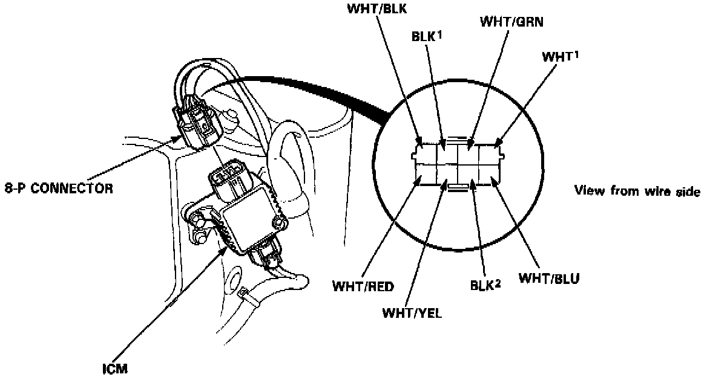
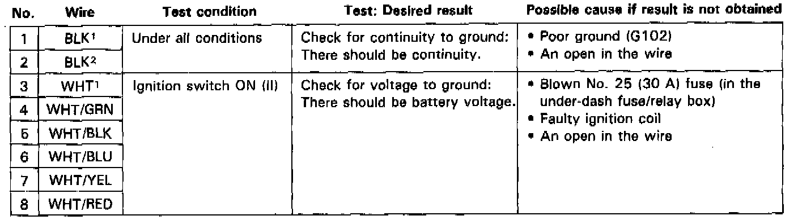

Ignition Control Module: Testing and Inspection


NOTE: See Trouble Code Descriptions if the malfunction indicator lamp (MIL) blinks. Testing and Inspection
Disconnect the 8-P connector from the ignition control module (ICM). Inspect the connector and socket terminals to be sure they are all making good contact.
^ If any terminals are bent, loose or corroded, repair them as necessary, and recheck the system.
^ If the terminals look OK, make the following input tests at the connector.
- If a test indicates a problem, find and correct the cause, then recheck the system.
- If all the input tests prove OK, the ICM must be faulty; replace it.